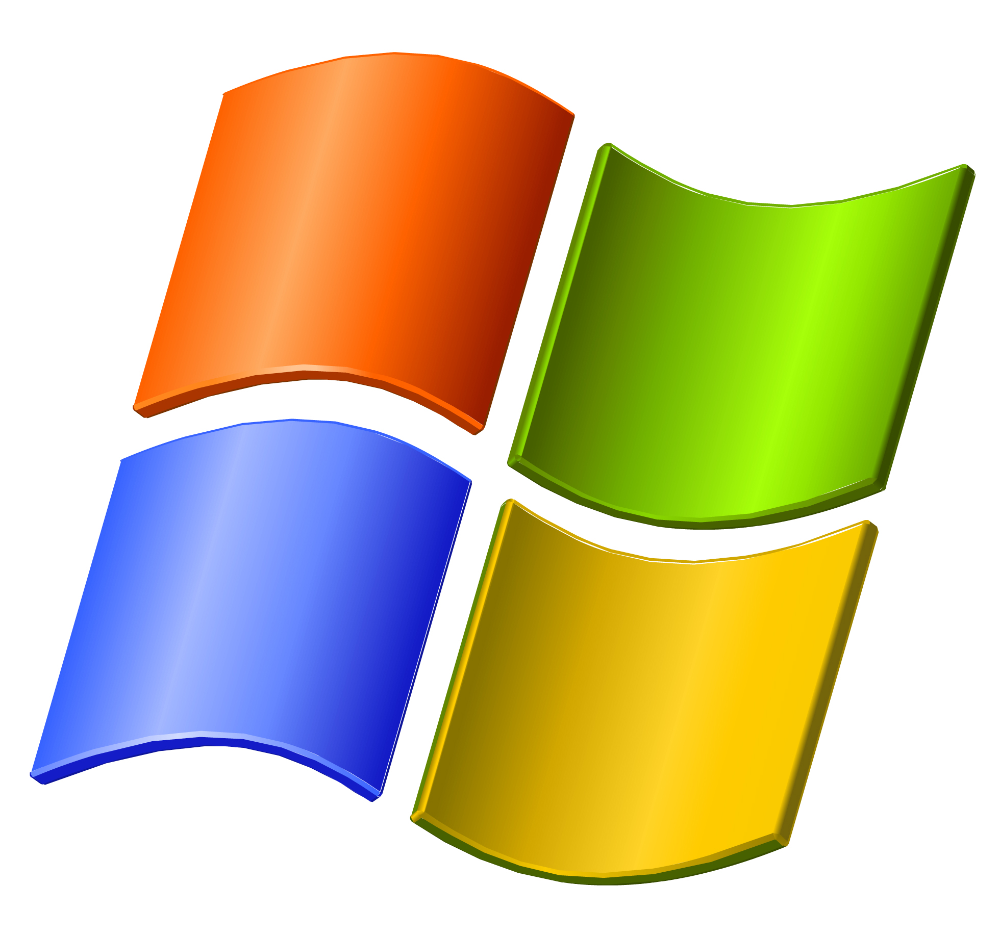
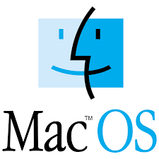

Logo |
SISTEMAS OPERATIVOS |
¿Qué es un Sistema Operativo?
Un sistema operativo es el software principal de una computadora. Se encarga de administrar los recursos del hardware y permite que los usuarios y los programas puedan interactuar con el equipo.
Funciones de un Sistema Operativo
- Administrar la memoria del computador.
- Controlar los dispositivos de hardware.
- Permitir la ejecución de programas.
- Gestionar archivos y carpetas.
- Proporcionar seguridad al sistema.
Ejemplos de Sistemas Operativos
Windows
Es uno de los sistemas operativos más utilizados en computadoras personales.

Linux
Es un sistema operativo libre y de código abierto usado en servidores y computadoras.

macOS
Sistema operativo desarrollado por Apple para sus computadoras Mac.

Importancia
Sin un sistema operativo una computadora no podría funcionar correctamente, ya que este permite la comunicación entre el usuario, el software y el hardware.